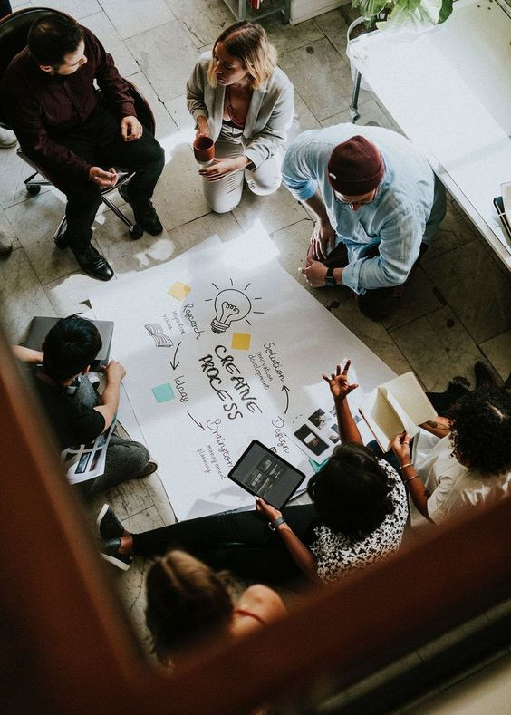

My path started 2023, I embarked on my journey into web development by enrolling in a program with the University of London (UoL). The course offered a solid foundation in coding, covering key languages like HTML, CSS, and JavaScript.
Let's get to know eachother
After laying the groundwork with the University of London, I was eager to take my web development skills to the next level. I started by diving deeper into JavaScript frameworks like React and Vue.js, which opened up new possibilities for creating dynamic, user-friendly web applications. I also began exploring backend development with Node.js and Express, allowing me to build full-stack applications.
After gaining substantial experience in the industry, I felt inspired to start developing my own projects. With a solid foundation in web development and a deep understanding of emerging technologies, I began turning my ideas into fully realized applications. These projects allowed me to experiment with new frameworks, explore innovative solutions, and push the boundaries of my creativity.
